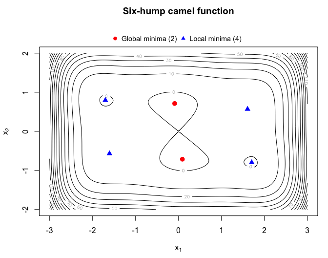

This R package implements a variable neighborhood trust region search (VNTRS) algorithm for nonlinear global optimization, based on Bierlaire et al. (2009) “A Heuristic for Nonlinear Global Optimization”.
The method combines neighborhood exploration with a trust-region framework to search the solution space efficiently. It can terminate a local search early when the iterates converge toward a previously visited local optimum or when further improvement within the current region is unlikely. The algorithm can also be used to identify multiple local optima.
The package implementation differs in some aspects from Bierlaire et al. (2009) as follows:
| Aspect | Bierlaire et al. (2009) | vntrs |
Rationale |
|---|---|---|---|
| Local search | Unconstrained trust-region method | Optionally constrained trust-region method, using damped BFGS when no analytical Hessian is supplied | Allows for parameter bounds, improves numerical stability |
| Convergence check | Based on absolute gradient norm | Based on relative gradient norm | Less dependence on parameter scales |
| Previously visited optimum | Stops if the Euclidean distance to a visited optimum is at most | Stops based on a relative, component-wise comparison | Less dependence on parameter scales |
| Armijo-like interruption | Stops when the objective improvement fails an Armijo-like test | Not used | Limited additional value |
How to get started
Specify a function
fthat computes the objective value. It may also return the gradient and Hessian. Omitted derivatives are approximated by finite differences.-
Call
vntrs::vntrs(f = f, npar = npar, minimize = minimize), wherenparis the number of parameters offandminimizedetermines whetherfshould be minimized (minimize = TRUE, the default) or maximized (minimize = FALSE).
Optionally, the algorithm can be tuned by setting control arguments, see help("vntrs") for details.
Example
The example below minimizes the six-hump camel function over . On this domain, the function has two global minima and four additional local minima.
library(vntrs)
set.seed(1)
camel <- function(x) {
(4 - 2.1 * x[1]^2 + x[1]^4 / 3) * x[1]^2 + x[1] * x[2] + (-4 + 4 * x[2]^2) * x[2]^2
}
optima <- vntrs(
f = camel, npar = 2,
lower = c(-3, -2), upper = c(3, 2), # search bounds
collect_all = TRUE, # also collect local optima
neighborhoods = 10 # number of neighborhoods
)
optima
#> p1 p2 value global
#> 1 -0.08984203 0.7126564 -1.0316285 TRUE
#> 2 0.08984201 -0.7126564 -1.0316285 TRUE
#> 3 1.70360672 -0.7960836 -0.2154638 FALSE
#> 4 -1.70360674 0.7960836 -0.2154638 FALSE
#> 5 -1.60710473 -0.5686515 2.1042503 FALSE
#> 6 1.60710475 0.5686517 2.1042503 FALSE